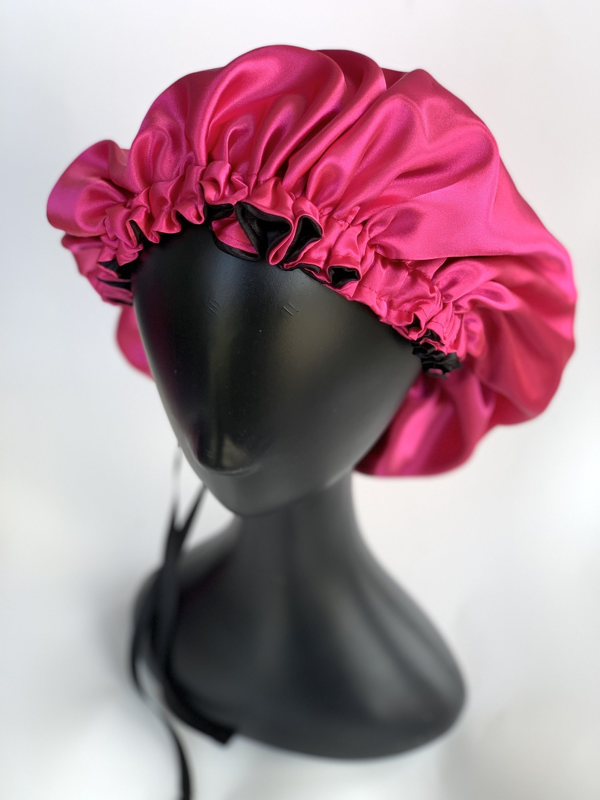

Natural Hair Care Regimen
My Deep Conditioning Tips
- Always apply your DC to clean, damp hair, either before or
after shampooing.
- By sectioning your hair, you allow even distribution of your
DC throughout your hair so that each curl reaps the
benefits.
- Apply and focus DC to the mid and ends of your hair bbut
don't neglect your scalp area. Work the product up and
towards the roots
- If you own a heat cap or steamer, be sure to let the DC sit
in it for about 30 minutes to 1 hour. Heat aids in
penetrating the hair cuticle, allowing the hair to receive
the moisture and DC benefit.
- My advice is: Do not use your DC as a leave-in, or overnight
hair mask. Allow it to serve its purpose! Leaving your DC in
your hair for more than an hour/allocated time may have
damaging effects on your hair. SO be sure to follow the
instruction on the bottle of your DC.
- Rinse your DC out with cold water that way it closes your cuticles and locks that moisture in
- Deep condition regularly!! Once a week is enough and if your hair is of high porosity, balance it with a Protein Mask
HAPPY DEEP CONDITIONING !!
The benefits of wearing a bonnet

Sleeping with a satin cap means fewer split ends. It protects your
hair from the dryness caused by friction between your hair and
moisture-absorbing materials such as cotton. This also helps to
greatly reduce breakage, tangles and thinning. If you have curly or
wavy hair, you know that sleep can be messy for your hair!
Keep your crown healthy and vibrant ladies. Wear a satin bonnet to
bed.